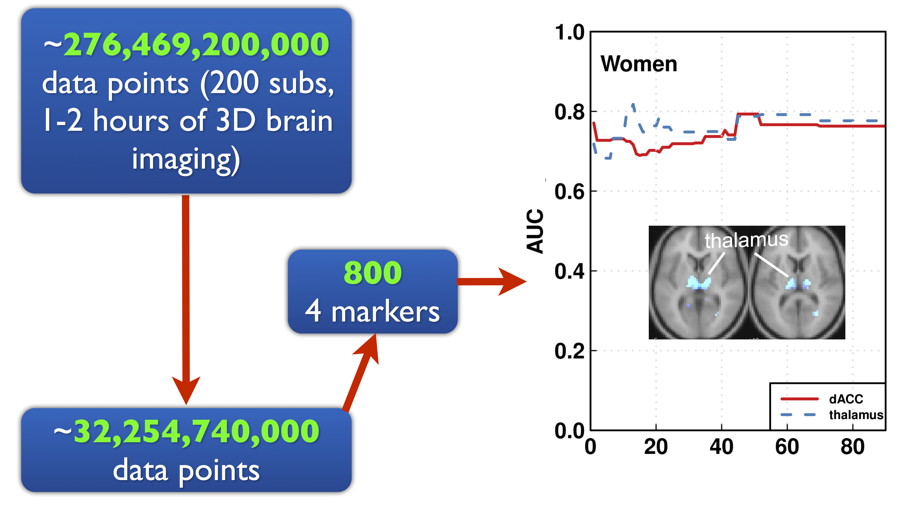
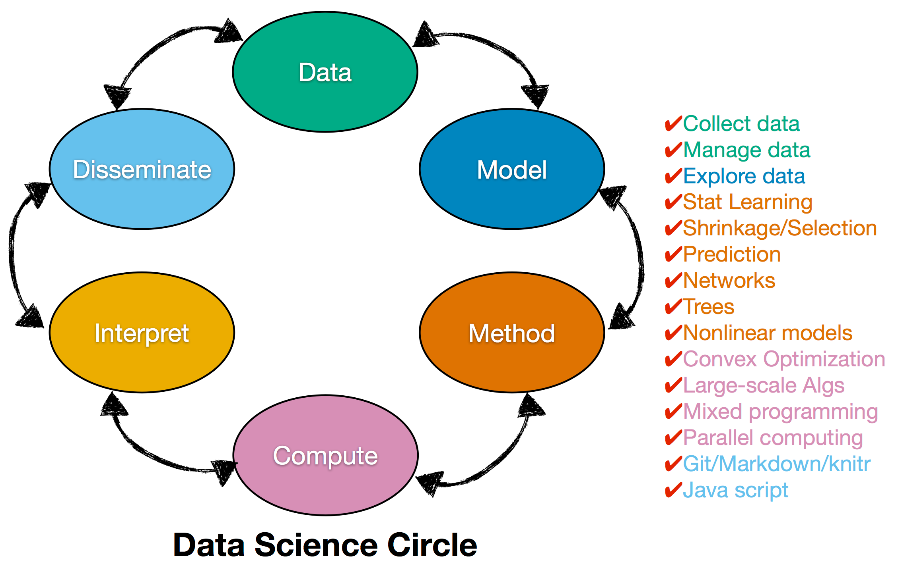
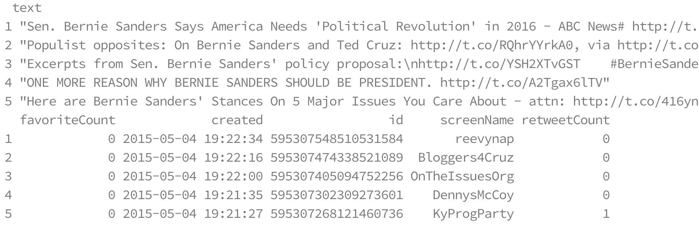

From Big Data to Knowledge:
Brain, Twitter, and Beyond
Xi (Rossi) Luo
Department of Biostatistics
Center for Statistical Sciences
Computation in Brain and Mind
Brown Institute for Brain Science

April 20, 2016
Big Data and Brain

- 100 million (
$10^{11}$ ) neurons - 100 trillion (
$10^{14}$ ) neuronal connections
fMRI data: blood-oxygen-level dependent (BOLD) signals from each
Complex Data: fMRI Studies
Sub 1, Sess 1

Time 1
2
…
~200
⋮
Sub i, Sess j
…
⋮
Sub ~100, Sess ~4
…
$100 \times 4 \times 300 \times 10^6 \approx 100 $ billion data points
Predicting Cocaine Relapses

Complex Models: Brain Networks
Find brain networks with 1 trillion (
Course: Stat Methods for Big Data

Applied Mathematics + Computer Science + Statistics
Case Study: Twitter

Hillary Clinton

Bernie Sanders
Excerpt of Data

Statistical test: $p<10^{-4}$
Summary
- Handle big data
- Complex mathematical modeling
- Extract knowledge from data
- Course SMBD covers the above points